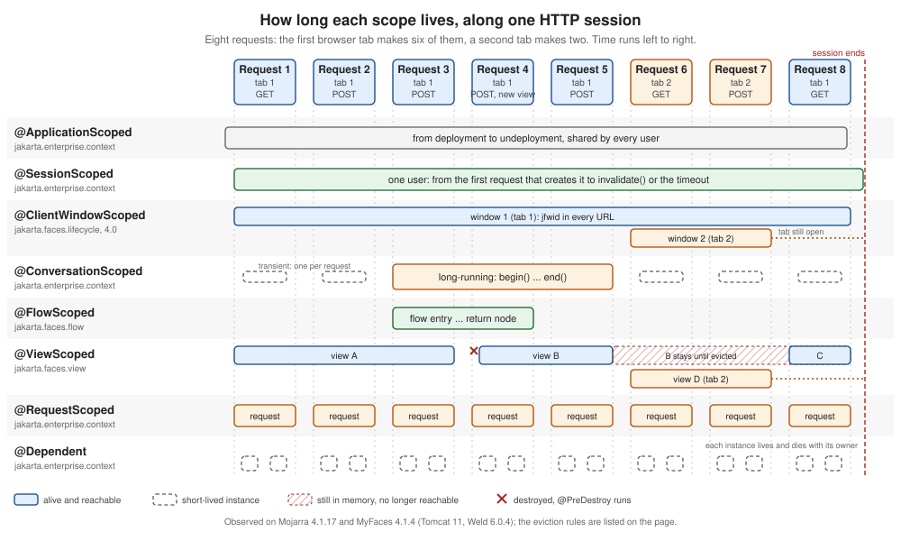

Scopes
|
This content was generated with the assistance of AI and should be verified against the official documentation before being relied on in production. |
This page is written against Jakarta Faces 4.1 (API jakarta.faces-api 4.1.2, part of Jakarta EE 11, which brings CDI 4.1),
Eclipse Mojarra 4.1.17 and Apache MyFaces Core 4.1.4, with Java 17 or later. Faces 4.0 behaves the same for everything below;
the one 4.0 feature, @ClientWindowScoped, is described in its own section and the differences between releases are collected
in What Changed per Version. Every example was compiled and deployed in a scratch Bookshelf WAR on Apache Tomcat 11.0.26 with Weld
6.0.4.Final, once with Mojarra and once with MyFaces, and driven with scripted HTTP requests: each instance number, each
@PreDestroy call and each error message quoted on this page comes from those runs (checked on 2026-10-08). Where the two
implementations disagree, Mojarra and MyFaces Compared lists the differences. Faces 5.0 is still a milestone release at the time of
writing and nothing here describes it as current behaviour.
A scope answers one question about an object: how long does it live, and who shares it? A backing bean that lives for one request forgets everything the moment the response is sent. A backing bean that lives as long as the user’s session remembers everything, for every browser tab, until the session ends. Between those two extremes Faces adds scopes that match how a page is actually used: a view that is posted back several times, a browser tab, a multi-page wizard. Picking the wrong one is the most common source of state bugs in a Faces application: values that vanish after a click, a draft that appears in the wrong tab, a session that grows until the server runs out of memory. This page explains each scope, shows when its instances are created and destroyed, and ends with a way to choose.
What a Scope Is
Faces beans are CDI beans (see Backing Beans and CDI). In CDI a scope is a
context: a store of bean instances with a lifecycle. The container creates an instance the first time a bean of that scope is
used in the context, hands the same instance to everybody that uses the bean in that context, and destroys it, calling its
@PreDestroy method, when the context ends. Four ideas explain most of what follows.
-
Normal scopes and client proxies. Every scope in this page except
@Dependentis a normal scope. When a bean of a normal scope is injected, the field does not hold the instance but a small generated subclass, the client proxy. Each method call on the proxy looks up the instance that belongs to the context that is active at that moment. This is what lets an@ApplicationScopedservice hold a reference to a@RequestScopedbean: the reference is always to "the current request’s instance". It is also why a normal-scoped bean class must not befinaland needs a non-private no-argument constructor. -
The pseudo-scope.
@Dependenthas no context and no proxy. Each injection point gets its own instance, and that instance is destroyed with the object it was injected into. -
Passivating scopes. A scope that the container may move to secondary storage (for a session that is written to disk or replicated to another server) is declared
@NormalScope(passivating=true). The CDI specification requires beans of a passivating scope to be passivation capable, which for a managed bean means that the class isSerializableand that everything injected into it can also be passivated. The container checks this at deployment. -
Active contexts. A context is active only while the container says so. Using a bean whose scope is not active is an error:
WELD-001303: No active contexts for scope type .... Most of the surprises with@ClientWindowScopedand@ConversationScopedare of this kind.
Faces takes @RequestScoped, @SessionScoped, @ApplicationScoped, @ConversationScoped and @Dependent from CDI
(jakarta.enterprise.context) and defines three scopes of its own: @ViewScoped in jakarta.faces.view, @FlowScoped in
jakarta.faces.flow and @ClientWindowScoped in jakarta.faces.lifecycle. The Jakarta EE Tutorial lists the first group
under "Using Scopes" in the CDI chapter and the Faces group under "Using Managed Bean Scopes". The CDI specification puts the
request and application scopes into CDI Lite and the session and conversation scopes into CDI Full, the profile of a
Jakarta EE server; Weld on Tomcat, as used here, provides them as well (see Tomcat and Weld).
| Annotation | Package | Passivating | One instance per | Ends when |
|---|---|---|---|---|
|
|
no |
HTTP request, including every Ajax request |
the response is complete |
|
|
yes |
view (one page instance in one browser) |
navigation produces a new view, the session ends, or the view is evicted |
|
|
yes |
browser window or tab (4.0) |
the window is evicted ( |
|
|
yes |
conversation, transient or long-running |
|
|
|
yes |
run through a Faces flow |
the flow is left through a return node |
|
|
yes |
HTTP session, one per user |
|
|
|
no |
web application |
undeployment |
|
|
not applicable |
injection point, or one EL evaluation |
the object it was injected into is destroyed |
Lifetimes on One Timeline
The figure follows one HTTP session through eight requests. The first browser tab makes requests 1 to 5 and 8, a second tab makes requests 6 and 7, and the session ends after request 8. Each lane is one scope, and a bar is the lifetime of one instance of that scope.

Read the lanes from the bottom. A request-scoped bean lives for exactly one request, so there is a new bar every time. A
view-scoped bean spans the postbacks of one view: view A lives through requests 1 to 3 and is destroyed when request 4 navigates to another view,
which creates view B. A view that is left by a redirect or abandoned with a new GET is not destroyed at that moment; the dashed
bar after B shows an instance that stays in the session until the implementation evicts it or the session ends. The client
window lane has two bars, one per tab: the second tab sees nothing the first tab put into its window scope, but both see the
same session bean. The conversation lane shows the difference between a transient conversation (one short bar per request) and
a long-running one (one bar from begin() to end() that survives requests and view changes). The flow lane lives for the
stretch between entering and leaving a flow. The session and application bars are the longest.
The timeline is drawn from observation, not from the specification alone. The sections below show the code that produced each behaviour.
A Probe in Every Scope
The quickest way to understand a scope is to watch it. The probe below is a base class that gets an instance number when it is
constructed, counts clicks, and writes a line to an application-scoped log in its @PostConstruct and @PreDestroy methods.
Seven tiny subclasses differ only in their scope annotation. The flow scope needs a flow definition and has its own example
in @FlowScoped.
package org.example.bookshelf.web;
import jakarta.annotation.PostConstruct;
import jakarta.annotation.PreDestroy;
import jakarta.inject.Inject;
import java.io.Serializable;
import java.util.concurrent.atomic.AtomicInteger;
/** A diagnostic base class: every scope below extends it to show when instances are created and destroyed. */
public abstract class Probe implements Serializable {
private static final AtomicInteger SEQUENCE = new AtomicInteger();
private final int id = SEQUENCE.incrementAndGet();
private int clicks;
@Inject
private EventLog log;
@PostConstruct
void created() {
log.add("created " + getClass().getSimpleName() + " #" + id);
}
@PreDestroy
void destroyed() {
log.add("destroyed " + getClass().getSimpleName() + " #" + id);
}
public int getId() {
return id;
}
public int getClicks() {
return clicks;
}
public void click() {
clicks++;
}
}package org.example.bookshelf.web;
import jakarta.enterprise.context.ApplicationScoped;
import jakarta.inject.Named;
import java.io.Serializable;
import java.util.List;
import java.util.concurrent.CopyOnWriteArrayList;
@Named
@ApplicationScoped
public class EventLog implements Serializable {
private final List<String> entries = new CopyOnWriteArrayList<>();
public void add(String entry) {
entries.add(entry);
}
public List<String> getEntries() {
return entries;
}
public void clear() {
entries.clear();
}
}Source: Jakarta CDI 4.1 specification: Lifecycle of contextual instances and Jakarta EE Tutorial: Using Scopes
Each probe bean is a class of three lines with @Named and one scope annotation; the table gives the imports.
Bean (@Named) |
Scope annotation | Import |
|---|---|---|
|
|
|
|
|
|
|
|
|
|
|
|
|
|
|
|
|
|
|
|
|
Two of them do a little more. The view probe injects a dependent probe, to show who owns a dependent object, and the conversation probe
exposes the Conversation that CDI provides, so that the page can begin and end it.
package org.example.bookshelf.web;
import jakarta.faces.view.ViewScoped;
import jakarta.inject.Inject;
import jakarta.inject.Named;
@Named("viewProbe")
@ViewScoped
public class ViewProbe extends Probe {
@Inject
private DependentProbe helper;
public int getHelperId() {
return helper.getId();
}
}package org.example.bookshelf.web;
import jakarta.enterprise.context.Conversation;
import jakarta.enterprise.context.ConversationScoped;
import jakarta.inject.Inject;
import jakarta.inject.Named;
@Named("conversationProbe")
@ConversationScoped
public class ConversationProbe extends Probe {
@Inject
private Conversation conversation;
public void begin() {
if (conversation.isTransient()) {
conversation.begin();
}
}
public void end() {
if (!conversation.isTransient()) {
conversation.end();
}
}
}<!DOCTYPE html>
<html xmlns="http://www.w3.org/1999/xhtml"
xmlns:h="jakarta.faces.html"
xmlns:f="jakarta.faces.core">
<h:head>
<title>Scope probe</title>
</h:head>
<h:body>
<h:form id="f">
<h:panelGrid columns="4">
<f:facet name="header">Instance number and clicks per scope</f:facet>
<h:outputText value="request"/>
<h:outputText id="requestId" value="#{requestProbe.id}"/>
<h:outputText id="requestClicks" value="#{requestProbe.clicks}"/>
<h:commandButton id="requestClick" value="+" action="#{requestProbe.click}"/>
<h:outputText value="view"/>
<h:outputText id="viewId" value="#{viewProbe.id}"/>
<h:outputText id="viewClicks" value="#{viewProbe.clicks}"/>
<h:commandButton id="viewClick" value="+" action="#{viewProbe.click}"/>
<h:outputText value="dependent in view bean"/>
<h:outputText id="helperId" value="#{viewProbe.helperId}"/>
<h:outputText value=""/>
<h:outputText value=""/>
<h:outputText value="client window"/>
<h:outputText id="windowId" value="#{clientWindowProbe.id}"/>
<h:outputText id="windowClicks" value="#{clientWindowProbe.clicks}"/>
<h:commandButton id="windowClick" value="+" action="#{clientWindowProbe.click}"/>
<h:outputText value="conversation"/>
<h:outputText id="conversationId" value="#{conversationProbe.id}"/>
<h:outputText id="conversationClicks" value="#{conversationProbe.clicks}"/>
<h:commandButton id="conversationClick" value="+" action="#{conversationProbe.click}"/>
<h:outputText value="session"/>
<h:outputText id="sessionId" value="#{sessionProbe.id}"/>
<h:outputText id="sessionClicks" value="#{sessionProbe.clicks}"/>
<h:commandButton id="sessionClick" value="+" action="#{sessionProbe.click}"/>
<h:outputText value="application"/>
<h:outputText id="applicationId" value="#{applicationProbe.id}"/>
<h:outputText id="applicationClicks" value="#{applicationProbe.clicks}"/>
<h:commandButton id="applicationClick" value="+" action="#{applicationProbe.click}"/>
<h:outputText value="dependent"/>
<h:outputText id="dependentId" value="#{dependentProbe.id}"/>
<h:outputText id="dependentClicks" value="#{dependentProbe.clicks}"/>
<h:commandButton id="dependentClick" value="+" action="#{dependentProbe.click}"/>
</h:panelGrid>
<h:outputText id="again" value="second reference: #{dependentProbe.id}"/>
<h:commandButton id="begin" value="Begin conversation" action="#{conversationProbe.begin}"/>
<h:commandButton id="end" value="End conversation" action="#{conversationProbe.end}"/>
<h:commandButton id="stay" value="Postback, no outcome"/>
<h:commandButton id="same" value="Outcome: same view id" action="probe"/>
<h:commandButton id="redirect" value="Outcome: same view id with redirect" action="probe?faces-redirect=true"/>
<h:commandButton id="other" value="Outcome: other view" action="log"/>
</h:form>
</h:body>
</html><!DOCTYPE html>
<html xmlns="http://www.w3.org/1999/xhtml" xmlns:h="jakarta.faces.html" xmlns:ui="jakarta.faces.facelets">
<h:head><title>Log</title></h:head>
<h:body><pre><ui:repeat value="#{eventLog.entries}" var="e">#{e}
</ui:repeat></pre></h:body>
</html>Source: Jakarta Faces 4.1 API: ViewScoped, Jakarta Faces 4.1 API: ClientWindowScoped and Jakarta CDI 4.1 API: Conversation
The page has no web.xml of its own beyond the client window setting that @ClientWindowScoped explains, and beans.xml uses
bean-discovery-mode="annotated", so the scope annotations are what make the classes beans. The same page, driven through
one session in one browser window, gave these results on both Mojarra and MyFaces; the numbers are the instance numbers the
probe printed, and "new" means that a new instance was created.
| Action | Result |
|---|---|
First |
Every scope created one instance: request, view, client window, session, application, and a transient conversation. |
Click |
The request probe and the transient conversation are new on every request. Their counter shows 1 in the response to the click itself, which is the same request, and 0 in every later request. The view, client window, session and application probes keep their instance number and their count. |
Postback without an outcome (the |
The view probe keeps its instance (same number, same count). Only the request instance and the transient conversation change. |
Outcome that names the same view id ( |
The view probe is replaced by a new instance with a count of 0, and the old one receives |
Outcome with |
A new view, hence a new view probe. The previous view probe did not receive |
|
The conversation probe keeps its number and its count across the following requests, across a null postback and across the navigation to a new view. |
|
The next request has a new transient conversation probe again. |
A plain |
A new view probe (a refresh never reuses the old view), the same client window, session and application probes. |
The log.xhtml page shows the rest. In the sequence above, the view probe that a navigation outcome without a redirect replaced was
destroyed at once, while the ones left behind by a redirect or by a new GET were not destroyed at that moment; Limits of the View Scope shows
when they are.
@RequestScoped
A request-scoped bean lives for one HTTP request: the first time an expression or injection point touches it, the container creates it,
and it is destroyed after the response is complete. A Faces postback is a single request: values are applied, the action runs and the
response is rendered, all with the same instance. With the Post/Redirect/Get pattern the redirected GET is a second, separate
request with a separate instance. An Ajax request
is also a request: a request-scoped bean behind an f:ajax field is rebuilt for every Ajax call.
That makes @RequestScoped the right scope for things that are really about the request: the search text and the results of a
search, the parameters of a filter form, a bean that only reads data and renders it. It is also the cheapest scope, because nothing is
kept after the response. The Bookshelf search page keeps the query and the result list in a request-scoped bean:
package org.example.bookshelf.web;
import jakarta.enterprise.context.RequestScoped;
import jakarta.inject.Inject;
import jakarta.inject.Named;
import java.util.List;
import org.example.bookshelf.model.Book;
import org.example.bookshelf.service.BookService;
@Named
@RequestScoped
public class BookSearchBean {
@Inject
private BookService books;
@Inject
private SearchStatistics statistics;
private String query;
private List<Book> results = List.of();
public void search() {
results = books.search(query);
statistics.recordSearch();
}
public String getQuery() {
return query;
}
public void setQuery(String query) {
this.query = query;
}
public List<Book> getResults() {
return results;
}
}<!DOCTYPE html>
<html xmlns="http://www.w3.org/1999/xhtml"
xmlns:h="jakarta.faces.html"
xmlns:f="jakarta.faces.core"
xmlns:ui="jakarta.faces.facelets">
<h:head><title>Search</title></h:head>
<h:body>
<h:form id="f">
<h:inputText id="query" value="#{bookSearchBean.query}"/>
<h:commandButton id="go" value="Search" action="#{bookSearchBean.search}"/>
<ui:repeat id="rows" value="#{bookSearchBean.results}" var="b">
<div class="row">#{isbnFormatter.format(b.isbn)} #{b.title} (#{b.author})</div>
</ui:repeat>
<h:outputText id="count" value="searches=#{searchStatistics.searches}"/>
</h:form>
</h:body>
</html>The bean also uses the BookService and SearchStatistics beans from the application scope, and the IsbnFormatter from the
dependent pseudo-scope; both appear below. Searching for "java" returned the two matching books and counted one search, and an
empty query returned all four books and counted a second one. The result list does not need to survive the request, because
the page that shows it is the response to the same request. That is the limit of this scope. A request-scoped bean cannot remember what was
selected in row 3 once the postback has ended; the values it receives in the postback are written to it in the Update Model Values phase,
and they are gone after Render Response. The consequences for a table that re-queries its list in every request are in
Row Actions and the lifecycle context is in
the phases of the lifecycle.
A request-scoped bean is also the only safe home for a bean referenced by a component’s binding attribute: component instances
belong to one view and one request, and must not be shared (see the binding pitfall).
@ViewScoped
@ViewScoped is the scope that fits a Faces page best, and the reason Faces needs scopes of its own. The user opens a page, types,
clicks a button that validates, an Ajax request refreshes a field, another button saves: all of that is a series of postbacks of
one view, and the page expects its backing bean to be the same object throughout. A request-scoped bean forgets the
draft between clicks. A session-scoped bean would keep the draft but would also share it with every tab and keep it until the
session ends. A view-scoped bean is created the first time it is used on a view, survives every postback and Ajax request of that
view, and is destroyed when the user leaves the view.
The annotation to import is jakarta.faces.view.ViewScoped. Do not confuse it with two classes of the same name: the old
javax.faces.bean.ViewScoped of the native managed bean facility, which was removed from the platform in Faces 4.0 together with
@ManagedBean, and org.omnifaces.cdi.ViewScoped, which is OmniFaces' own CDI view scope (see OmniFaces' View Scope). Like every
other scope it is combined with @Named to make the bean reachable from EL. The API documentation says that the bean must be stored in the map returned by
UIViewRoot.getViewMap(), that its @PostConstruct and @PreDestroy methods run when the scope begins and ends, and that
the bean must be serialisable and proxyable.
The Bookshelf review page is the classic case. A reader writes a review, a counter shows how many characters are left
(an f:ajax request on every key), a Preview button toggles a preview, and Save refuses an empty review with a message. All of
that state lives in one view-scoped bean:
package org.example.bookshelf.web;
import jakarta.faces.application.FacesMessage;
import jakarta.faces.context.FacesContext;
import jakarta.faces.view.ViewScoped;
import jakarta.inject.Inject;
import jakarta.inject.Named;
import java.io.Serializable;
@Named
@ViewScoped
public class ReviewDraftBean implements Serializable {
private static final int MAX_LENGTH = 280;
@Inject
private FacesContext context;
private String text = "";
private int previews;
public void preview() {
previews++;
}
public String save() {
if (text.isBlank()) {
context.addMessage(null, new FacesMessage(FacesMessage.SEVERITY_ERROR, "Write something first", null));
return null;
}
return "index?faces-redirect=true";
}
public int getRemaining() {
return MAX_LENGTH - text.length();
}
public String getText() {
return text;
}
public void setText(String text) {
this.text = text == null ? "" : text;
}
public int getPreviews() {
return previews;
}
}<!DOCTYPE html>
<html xmlns="http://www.w3.org/1999/xhtml"
xmlns:h="jakarta.faces.html"
xmlns:f="jakarta.faces.core"
xmlns:ui="jakarta.faces.facelets">
<h:head><title>Review</title></h:head>
<h:body>
<h:form id="f">
<h:inputTextarea id="text" value="#{reviewDraftBean.text}">
<f:ajax event="keyup" render="remaining"/>
</h:inputTextarea>
<h:outputText id="remaining" value="remaining=#{reviewDraftBean.remaining}"/>
<h:outputText id="previews" value="previews=#{reviewDraftBean.previews}"/>
<h:commandButton id="preview" value="Preview" action="#{reviewDraftBean.preview}"/>
<h:commandButton id="save" value="Save" action="#{reviewDraftBean.save}"/>
<h:commandLink id="leave" value="Back" action="index"/>
<h:messages id="msgs"/>
</h:form>
</h:body>
</html>In the run on both implementations the Preview button counted 1 and then, after a rejected Save, counted 2 on the same
instance; the draft text was still in the field after the failed save; an Ajax keyup request for the text field
abcde returned a partial response that rendered remaining=275 from the same instance; and a fresh GET of review.xhtml after leaving the page showed previews=0 again, a new instance. The bean injects FacesContext, a client proxy for the current request that is safe to keep in a
passivating bean (see Serialisation, Passivation and Memory), instead of calling FacesContext.getCurrentInstance(). The view map is also visible from EL as #{viewScope}, which is the implicit object
for facesContext.getViewRoot().getViewMap() in the specification; listing its keys on a page that used viewProbe
returned [viewProbe] on both implementations, so in that run the bean was stored under its EL name.
When the View Scope Ends
The API documentation names two circumstances. The first is that FacesContext.setViewRoot() is called with a view root that is
different from the current one, which is what happens when a navigation outcome selects a view. The second is that the session
that was active when the bean was created expires. The observed behaviour is a little wider than the first sentence of the
documentation suggests, so it helps to list it:
| What the user does | Scope ends? | Observed |
|---|---|---|
Postback with no outcome ( |
no |
The same instance is used. This is the point of the scope. |
Action returns an outcome that selects another view id |
yes |
The old instance receives |
Action returns an outcome that names the same view id ( |
yes |
Faces builds a new view root for the outcome, so the instance is replaced and destroyed. To stay on the page, return |
Outcome with |
not immediately |
A new view is created by the redirected |
A new |
not immediately |
A new view and a new instance. The old instance stays until the implementation evicts it (see Limits of the View Scope) or the session ends. |
Session invalidated or expired |
yes |
All view-scoped instances of the session are destroyed, on both implementations; |
User closes the tab or navigates away with a |
no |
The server is not told. The standard scope cannot react to the browser’s unload event. OmniFaces' view scope can. |
Two practical rules follow. Do not rely on @PreDestroy of a view-scoped bean to release an expensive resource promptly: it runs
when the user navigates with a postback, or late, or at session end. And do not return the current view id as an outcome to "refresh" the
page; that discards the view-scoped state.
Limits of the View Scope
A view-scoped instance is kept in the session, so every view the user has opened and not yet left costs memory. The cost is
not zero for a plain GET: when the page uses a view-scoped bean, every reload, every visit from another tab and every crawler request creates a view and a
bean, and the instance is kept until it is evicted or the session ends. Faces limits this, but through settings of the implementation, not of
the specification. The specification does not define any of the names below.
| What it limits | Mojarra 4.1.17 | MyFaces 4.1.4 |
|---|---|---|
Views whose state the server keeps per session with server state saving (how many old pages can still be posted back) |
|
|
Active view scope maps, that is, views that still have beans |
|
no separate setting in the MyFaces configuration table; in the runs below the beans were destroyed with the evicted view state |
Client windows (bounds |
|
|
<context-param>
<param-name>com.sun.faces.numberOfActiveViewMaps</param-name>
<param-value>3</param-value>
</context-param>
<context-param>
<param-name>org.apache.myfaces.NUMBER_OF_VIEWS_IN_SESSION</param-name>
<param-value>3</param-value>
</context-param>Two experiments show what the limits do. In both, one session in one window repeatedly requested the probe page with plain GET requests.
-
Active view maps. With
numberOfActiveViewMapsset to 3 on Mojarra andNUMBER_OF_VIEWS_IN_SESSIONandNUMBER_OF_SEQUENTIAL_VIEWS_IN_SESSIONset to 3 on MyFaces, sevenGETrequests created seven view probes (numbers 2, 11, 17, 23, 29, 35, 41). From the fourth request on, every new instance destroyed the oldest one: instance 2 received@PreDestroyafter instance 23 was created, 11 after 29, and so on. The two implementations behaved the same. -
View states. With
numberOfLogicalViewsandnumberOfViewsInSessionset to 2 on Mojarra andNUMBER_OF_VIEWS_IN_SESSIONset to 2 on MyFaces, fourGETrequests created four views. A postback from the first or the second page then failed in the Restore View phase with aViewExpiredException("View … could not be restored"), and a postback from the fourth page worked. The difference is the beans: MyFaces destroyed the beans of the evicted views together with their state, while on Mojarra the beans of the views whose state had been evicted were still alive, because Mojarra counts view maps separately (the first setting above). A user with many open tabs can therefore lose a form whose state was evicted while the beans of other pages stay in the session.
The sequential limit matters more than its default suggests. NUMBER_OF_VIEWS_IN_SESSION counts the pages (views) a session may
keep, NUMBER_OF_SEQUENTIAL_VIEWS_IN_SESSION the states that the server keeps for the postbacks of one page one after the other (the
default of 4 is the value of the constant in MyfacesConfig of MyFaces 4.1.4). With the defaults, a chain of 21 states of one page (20 postbacks, each made from the page the previous one returned) left only the
latest four re-postable on MyFaces, although NUMBER_OF_VIEWS_IN_SESSION is 20, whereas Mojarra kept the latest fifteen (the run is
in the state saving page). A user who goes back with the browser button more than four
steps in a page that is posted repeatedly gets a ViewExpiredException on MyFaces long before the 20 views limit is near; raise
the sequential limit together with the views limit if that matters for the application.
Plan the limits for the way users work. An internal tool that is used in one tab can keep the defaults. A catalogue that people
open in many tabs needs enough views per session for the number of tabs, a view-scoped bean that holds little, and the exception
handling that turns a ViewExpiredException into a friendly page (the exception handling page
covers it).
Stateless Views
The Faces specification adds that @ViewScoped beans are not required to work at all in a stateless view, one that was marked
<f:view transient="true">. Both implementations work, but not usefully: every request gets a new instance, so the draft is lost on every
click. In the run, a stateless page showed instance 1 on the GET and instance 3 after a postback with a count of 1 for the click
on the new instance. In a development project stage Mojarra also adds a Faces message to the page and logs a warning,
@ViewScoped beans are not supported on stateless views; MyFaces does neither. The specification requires the message
outside the Production stage, so the absence of it on MyFaces is a difference to know about when testing.
OmniFaces' View Scope
OmniFaces ships its own annotation, org.omnifaces.cdi.ViewScoped, a CDI scope declared with the same passivating normal scope
meta-annotation. Its Javadoc explains the difference: in standard Faces the @PreDestroy method of a view-scoped bean is only called
when the session expires, while the OmniFaces scope also calls it when the browser unload event fires, using
navigator.sendBeacon, and removes the view state as well. It is an alternative when beans must release a resource
promptly, with the proviso that the FacesContext may not be available in @PreDestroy. The OmniFaces page
covers the library; OmniFaces 5.5.5 was the current release when this page was written.
@SessionScoped
A session-scoped bean lives as long as the user’s HttpSession: from the first request that touches it until invalidate() or
the session timeout. Every request of that user shares the instance, in every tab. It is a passivating scope, so the class must
implement Serializable and everything injected into it must be passivation capable (Serialisation, Passivation and Memory). The session context is part of
CDI Full; Weld on Tomcat provides it.
Use it for state that really belongs to the user and not to a page: language and layout preferences, a login-related object that the container’s security does not already provide, and a shopping basket that must be the same in every tab. In Bookshelf the page size and colour theme of the signed-in reader are preferences:
package org.example.bookshelf.web;
import jakarta.enterprise.context.SessionScoped;
import jakarta.inject.Named;
import java.io.Serializable;
@Named
@SessionScoped
public class UserPreferences implements Serializable {
private int pageSize = 10;
private String theme = "light";
public int getPageSize() {
return pageSize;
}
public void setPageSize(int pageSize) {
this.pageSize = pageSize;
}
public String getTheme() {
return theme;
}
public void setTheme(String theme) {
this.theme = theme;
}
}<!DOCTYPE html>
<html xmlns="http://www.w3.org/1999/xhtml"
xmlns:h="jakarta.faces.html"
xmlns:f="jakarta.faces.core"
xmlns:ui="jakarta.faces.facelets">
<h:head><title>Prefs</title></h:head>
<h:body>
<h:form id="f">
<h:inputText id="size" value="#{userPreferences.pageSize}"/>
<h:selectOneMenu id="theme" value="#{userPreferences.theme}">
<f:selectItem itemValue="light"/><f:selectItem itemValue="dark"/>
</h:selectOneMenu>
<h:commandButton id="save" value="Save"/>
<h:outputText id="show" value="size=#{userPreferences.pageSize} theme=#{userPreferences.theme}"/>
</h:form>
</h:body>
</html>Source: Jakarta CDI 4.1 API: SessionScoped and Jakarta CDI 4.1 specification, 17.6.1 Session context lifecycle
Submitting size 25 and theme dark kept both values on the following requests of the same session, and a second session (a second
cookie jar) started with the defaults, 10 and light. Because the scope outlives any one view, three habits matter.
-
Do not keep page state in the session. A form’s draft, a table’s selected rows or the current sort order kept in a session bean appears in every tab of the user, is still there when the user comes back an hour later, and is held in memory, and possibly in the replicated session, until the session ends. Two tabs that edit different reviews overwrite each other. The bug is invisible with one user and one tab, and it is a typical cause of memory problems in Faces applications. Keep the draft in a
@ViewScopedbean, or in a@ClientWindowScopedbean when it must survive navigation inside one tab. -
Expect concurrent access. One user can have several requests in flight: two tabs, an Ajax call and a download. A session bean that is modified by setters must tolerate this; make it effectively immutable, or synchronise access to the fields that change.
-
Keep it small and serialisable. Store identifiers and small value objects, not entities attached to a persistence context (see the persistence page), not
UIComponentinstances and not large lists.
ExternalContext.invalidateSession() ends the session at the end of the request and destroys the session context; the
Bookshelf logout action calls it and redirects. In the run, invalidating the session called @PreDestroy on the session probe and on the
view probes of that session on both implementations, and on the client window probes on MyFaces only (Mojarra and MyFaces Compared). After a login, renew the session identifier to prevent session fixation; the security page
covers it.
@ApplicationScoped
An application-scoped bean has exactly one instance for the whole web application. Every user and every thread shares it, so it
must be thread-safe, and it is the right home for things that are expensive to build and the same for everybody: a service, a
repository, a cache, configuration, counters. The scope is not passivating, so the class does not have to be Serializable: a
class without implements Serializable deployed without complaint, where the same class in session or view scope stopped the
deployment (Serialisation, Passivation and Memory). The instance is created lazily, the first time the bean is used. The Bookshelf BookService
is an application-scoped bean over an immutable list, and the statistics bean counts searches with a LongAdder, a counter that is
safe for concurrent increments:
package org.example.bookshelf.web;
import jakarta.annotation.PostConstruct;
import jakarta.enterprise.context.ApplicationScoped;
import jakarta.enterprise.context.Initialized;
import jakarta.enterprise.event.Observes;
import jakarta.inject.Inject;
import jakarta.inject.Named;
import java.util.concurrent.atomic.LongAdder;
@Named
@ApplicationScoped
public class SearchStatistics {
private final LongAdder searches = new LongAdder();
@Inject
private EventLog log;
@PostConstruct
void init() {
log.add("SearchStatistics created");
}
/** Referencing the bean from an observer makes the application scope create it at startup. */
void onStart(@Observes @Initialized(ApplicationScoped.class) Object event) {
log.add("application context initialized");
}
public void recordSearch() {
searches.increment();
}
public long getSearches() {
return searches.sum();
}
}Source: Jakarta CDI 4.1 API: ApplicationScoped and Jakarta CDI 4.1 specification, 6.6 Context management for built-in scopes
The onStart method observes the @Initialized(ApplicationScoped.class) event, which the container fires when the application
context starts. Because the observer method belongs to the bean, the container has to create the bean to call it. In the run, the log of
the application contained SearchStatistics created and application context initialized straight after the deployment,
before the first request, on Mojarra and on MyFaces; the probe beans, which have no such observer, were created on first use. OmniFaces
offers @Eager for the same purpose, for request, view, session and application scoped beans.
Three habits matter here. Never keep per-user data in an application-scoped field, because it is the data of whoever called last. Do not inject FacesContext
or other request-bound objects and use them from the startup observer; there is no request at that point, and the backing beans page
shows the ContextNotActiveException that results. And remember that the instance lives as long as the deployment, so a cache
that never evicts is a memory leak with a long fuse.
Source: OmniFaces 5.5.5 API: Eager
@ConversationScoped
A conversation is a scope whose boundaries the application chooses. Every servlet request has exactly one conversation. By default
it is transient: it exists for that request and is destroyed at the end of it, which makes a @ConversationScoped bean behave like a
request-scoped bean (in the probe, the conversation instance changed on every request until begin() was called). Calling
Conversation.begin() makes the conversation long-running: it gets an identifier, survives requests, and is kept until
end() or until its timeout. The conversation scope is part of CDI Full, it is passivating, and a long-running conversation is
tied to one HTTP session; it cannot cross session boundaries. Weld’s default timeout was 600000 milliseconds (ten minutes) in the run, and
setTimeout() changes it.
The Bookshelf loan wizard borrows a book in two steps: choose the book, then enter the borrower. The state of the first step has to survive the move to the second page, and a long-running conversation provides it without putting anything in the session for good:
package org.example.bookshelf.web;
import jakarta.enterprise.context.Conversation;
import jakarta.enterprise.context.ConversationScoped;
import jakarta.inject.Inject;
import jakarta.inject.Named;
import java.io.Serializable;
import org.example.bookshelf.model.Book;
import org.example.bookshelf.service.BookService;
@Named
@ConversationScoped
public class LoanConversation implements Serializable {
@Inject
private Conversation conversation;
@Inject
private BookService books;
private Book book;
private String borrower = "";
public String start(String isbn) {
if (conversation.isTransient()) {
conversation.begin();
}
conversation.setTimeout(10 * 60 * 1000L);
book = books.find(isbn);
return "loan-details?faces-redirect=true";
}
public String confirm() {
conversation.end();
return "index?faces-redirect=true";
}
public String cancel() {
if (!conversation.isTransient()) {
conversation.end();
}
return "index?faces-redirect=true";
}
public String getCid() {
return conversation.getId();
}
public Book getBook() {
return book;
}
public String getBorrower() {
return borrower;
}
public void setBorrower(String borrower) {
this.borrower = borrower;
}
}<!DOCTYPE html>
<html xmlns="http://www.w3.org/1999/xhtml"
xmlns:h="jakarta.faces.html"
xmlns:f="jakarta.faces.core"
xmlns:ui="jakarta.faces.facelets">
<h:head><title>Loan</title></h:head>
<h:body>
<h:form id="f">
<h:commandButton id="start" value="Borrow" action="#{loanConversation.start('9780134685991')}"/>
</h:form>
<h:link id="lnk" outcome="loan-details" value="details"/>
<h:outputLink id="ol" value="loan-details.xhtml">outputLink</h:outputLink>
</h:body>
</html><!DOCTYPE html>
<html xmlns="http://www.w3.org/1999/xhtml"
xmlns:h="jakarta.faces.html"
xmlns:f="jakarta.faces.core"
xmlns:ui="jakarta.faces.facelets">
<h:head><title>Details</title></h:head>
<h:body>
<h:form id="f">
<h:outputText id="book" value="book=#{loanConversation.book.title} cid=#{loanConversation.cid}"/>
<h:inputText id="borrower" value="#{loanConversation.borrower}"/>
<h:commandButton id="confirm" value="Confirm" action="#{loanConversation.confirm}"/>
<h:commandButton id="cancel" value="Cancel" action="#{loanConversation.cancel}" immediate="true"/>
<h:outputText id="who" value="who=#{loanConversation.borrower}"/>
</h:form>
<h:outputLink id="outputLink" value="loan-details.xhtml">outputLink</h:outputLink>
<h:link id="plain" outcome="loan-details" value="Details, without cid"/>
<h:link id="withCid" outcome="loan-details" value="Details, with cid"><f:param name="cid" value="#{loanConversation.cid}"/></h:link>
</h:body>
</html>How the run behaved:
-
Starting.
start("9780134685991")made the conversation long-running and returned a redirect outcome. The browser landed onloan-details.xhtml?cid=1&jfwid=...; the page showed the book that the first step chose andcid=1. -
Propagation. The conversation is propagated by the request parameter
cid. A Faces form submission carries it, because the form’s action URL contained?cid=1, and so does a redirect. A link does not:h:linkandh:outputLinkboth rendered a URL withoutcid. The link with<f:param name="cid" value="#{loanConversation.cid}"/>renderedloan-details.xhtml?cid=1. The Weld reference says the same: the conversation propagates with Faces requests and redirects but not with non-Faces requests such as a link. -
Tabs. A new
GETwithoutcidgot a new transient conversation and none of the long-running one’s state, so two tabs can be in two conversations of the same session. -
Ending.
confirm()calledend()and redirected. Once the conversation had ended, or after its timeout had elapsed, a request that carried the oldcidfailed withNonexistentConversationException, "WELD-000321: No conversation found to restore for id 1", and an HTTP 500 with the default error page. Acidin a bookmark or a back-button page is therefore a normal way to hit this error; handle it in the exception handling. On aGETit surfaces as theNonexistentConversationExceptionitself, in a postback wrapped in aFacesException. Both implementations behaved the same, because Weld owns conversations.
Conversations are explicit, which is both their strength and their cost: forgetting end() keeps the instance until the timeout, and a
long-running conversation per user is memory per user. Faces Flows (@FlowScoped) solve the same problem with the boundaries declared in the flow definition,
and @ClientWindowScoped (@ClientWindowScoped) with the browser tab as the boundary. A conversation is the lowest-level of the three and the only one that
does not depend on Faces at all.
@ClientWindowScoped
@ClientWindowScoped, introduced in Faces 4.0, gives a bean the lifetime of a browser window or tab. It answers a problem that
the scopes above cannot solve: an application where the user opens the same page in two tabs and edits two different books, and each tab
has to keep its own state, but the state must survive when the tab navigates from one page to another. The view scope would be lost at
the first navigation, and the session scope would be shared between the tabs.
The scope is built on the ClientWindow feature of Faces 2.2, which has to be switched on. The context parameter
jakarta.faces.CLIENT_WINDOW_MODE takes none, which is the default and means that no ClientWindow exists, or url, which the specification requires every
implementation to support, and MyFaces documents two more modes, url-redirect and client.
<context-param>
<param-name>jakarta.faces.CLIENT_WINDOW_MODE</param-name>
<param-value>url</param-value>
</context-param>
<context-param>
<param-name>jakarta.faces.NUMBER_OF_CLIENT_WINDOWS</param-name>
<param-value>10</param-value>
</context-param>package org.example.bookshelf.web;
import jakarta.faces.lifecycle.ClientWindowScoped;
import jakarta.inject.Named;
import java.io.Serializable;
@Named
@ClientWindowScoped
public class ShelfFilter implements Serializable {
private String author = "";
public String getAuthor() {
return author;
}
public void setAuthor(String author) {
this.author = author;
}
}<!DOCTYPE html>
<html xmlns="http://www.w3.org/1999/xhtml"
xmlns:h="jakarta.faces.html"
xmlns:f="jakarta.faces.core"
xmlns:ui="jakarta.faces.facelets">
<h:head><title>Shelf</title></h:head>
<h:body>
<h:form id="f">
<h:inputText id="author" value="#{shelfFilter.author}"/>
<h:commandButton id="apply" value="Apply"/>
<h:outputText id="show" value="author=#{shelfFilter.author}"/>
</h:form>
<a id="plain" href="shelf.xhtml">plain link</a>
<h:link id="hl" outcome="shelf" value="faces link"/>
</h:body>
</html>What the run showed:
-
Without the mode, the scope does not exist. With
CLIENT_WINDOW_MODEunset ornone, the first request that used a@ClientWindowScopedbean failed withContextNotActiveException: WELD-001303: No active contexts for scope type jakarta.faces.lifecycle.ClientWindowScoped, on both implementations. Flows change this: when the application defines a flow and the parameter is not set, both implementations switch theurlmode on by themselves, and@ClientWindowScopedworks with no setting at all. When the parameter is explicitlynoneand the application has a flow, Mojarra logged "jakarta.faces.CLIENT_WINDOW_MODE was set to none, but Faces Flows requires jakarta.faces.CLIENT_WINDOW_MODE is enabled. Setting to 'url'." and enabled the mode; MyFaces keptnoneand the bean still failed. -
Where the window id travels. In the
urlmode the window id is the query parameterjfwid, which Faces appends to every URL it generates for aGET(the action URL of the form,h:link, redirects) and also posts in the hidden fieldjakarta.faces.ClientWindow. Mojarra ids looked likeuuid:0,uuid:1; MyFaces ids were short random strings. A hand-written<a href="shelf.xhtml">carries no id: following it starts a new window, with a newShelfFilterinstance, exactly as opening the page in a second tab does. -
Two windows, one session. The first window filtered for the author "Bloch". A
GETwithout a window id in the same session got a second window with an empty filter, while the session probe was the same instance in both windows. Following a Faces-generated link from the first window, which carries itsjfwid, showed the "Bloch" filter again. -
Eviction. The number of windows per session is bounded by
jakarta.faces.NUMBER_OF_CLIENT_WINDOWS, which the API documentation defines as the maximum number ofClientWindowinstances used byClientWindowScopedand the Mojarra and MyFaces tables give as 10. With the limit at 2, opening four windows and then returning to the first created a new bean for it, on both implementations: the first window’s state had been evicted.
The lifetime of the scope is "as long as the window remains open or the session expires", in the words of the ClientWindow documentation, but
the server cannot see a tab being closed, so in practice it ends by eviction or at the end of the session. Do not put the id in a place that
confers authority: it separates the state of tabs, it is not authentication. The multiple windows page covers the
ClientWindow API (getId(), custom modes, disabling the id for a link; see also its section on @ClientWindowScoped), and the view state of several tabs.
@FlowScoped
@FlowScoped (jakarta.faces.flow, since 2.2) ties a bean to a Faces flow, a set of views that the user enters and leaves as a unit.
The annotation takes the flow id: @FlowScoped("borrow") means that the bean is created, lazily, once the user has entered the flow
borrow, and released when the user leaves it through a return node. The Faces implementation supplies the CDI extension that
implements the scope, and the scope is passivating. Flows are defined by a directory convention (a folder with a start view),
by a *-flow.xml file or by a @FlowDefinition producer, and have call, switch, method-call and return nodes; the Faces Flows page covers all of
that, and this section only shows what the scope does.
The Bookshelf borrow request is a flow. Its state is a request for one book and a number of days:
package org.example.bookshelf.web;
import jakarta.faces.flow.Flow;
import jakarta.faces.flow.FlowScoped;
import jakarta.inject.Inject;
import jakarta.inject.Named;
import java.io.Serializable;
@Named
@FlowScoped("borrow")
public class BorrowRequest implements Serializable {
@Inject
private Flow flow;
private String isbn = "9780134685991";
private int days = 7;
public String getFlowId() {
return flow.getId();
}
public String getIsbn() {
return isbn;
}
public void setIsbn(String isbn) {
this.isbn = isbn;
}
public int getDays() {
return days;
}
public void setDays(int days) {
this.days = days;
}
}<?xml version="1.0" encoding="UTF-8"?>
<faces-config xmlns="https://jakarta.ee/xml/ns/jakartaee"
xmlns:xsi="http://www.w3.org/2001/XMLSchema-instance"
xsi:schemaLocation="https://jakarta.ee/xml/ns/jakartaee https://jakarta.ee/xml/ns/jakartaee/web-facesconfig_4_1.xsd"
version="4.1">
<flow-definition id="borrow">
<flow-return id="done">
<from-outcome>/index</from-outcome>
</flow-return>
</flow-definition>
</faces-config><!DOCTYPE html>
<html xmlns="http://www.w3.org/1999/xhtml"
xmlns:h="jakarta.faces.html">
<h:head>
<title>Borrow</title>
</h:head>
<h:body>
<h:form id="f">
<h:inputText id="days" value="#{borrowRequest.days}"/>
<h:outputText id="state" value="flow=#{borrowRequest.flowId} isbn=#{borrowRequest.isbn} days=#{borrowRequest.days}"/>
<h:commandButton id="apply" value="Apply"/>
<h:commandButton id="done" value="Done" action="done"/>
</h:form>
</h:body>
</html><!DOCTYPE html>
<html xmlns="http://www.w3.org/1999/xhtml"
xmlns:h="jakarta.faces.html">
<h:head>
<title>Bookshelf</title>
</h:head>
<h:body>
<h:form id="f">
<h:commandButton id="borrow" value="Borrow a book" action="borrow"/>
</h:form>
</h:body>
</html>The borrow directory holds the start view borrow.xhtml, so the directory name is the flow id and the outcome borrow enters it. The run entered the flow
from index.xhtml, set the days to 14 in a postback inside the flow (the bean kept 14), left through the return node done
to /index, and entered again: the days were back at the default of 7, a new instance. The flow id is also available to the bean through
@Inject Flow (new in Faces 4.1): the page showed flow=borrow on both implementations. The #{flowScope} implicit object is the map of the current flow’s
values. A flow-scoped bean is the right size for a wizard that must not leak into the rest of the session and must start fresh when entered again.
Outside the flow the scope is not active: a page shown after the return node that still reads the bean fails with WELD-001303,
as the flows page shows in Reading a Flow Bean After the Flow; the client window feature that flows depend on is
described in The Client Window Mode.
@Dependent
@Dependent is not a context at all. It is the default scope for a bean that has no scope annotation (when it is a bean in
the first place, see the discovery section of the backing beans page) and it means "a new instance for each place that asks". The
instance is bound to whatever it was created for: injected into a field, it lives and dies with the object that owns the field.
Referenced from an EL expression through its @Named name, one instance serves one evaluation of the expression, and the
API documentation says that it is reused if the name appears several times inside that one expression but never when the expression is
evaluated again or when another expression is evaluated.
The run shows both rules. The probe page referenced the same @Dependent bean in two value expressions, and the two numbers differed;
clicking the + button on the dependent row always left the count at 0, because the action ran on a new instance that was
thrown away. The IsbnFormatter of the search page, a helper with no state, is the intended use: cheap, stateless, created where it is needed.
package org.example.bookshelf.web;
import jakarta.enterprise.context.Dependent;
import jakarta.inject.Named;
import java.io.Serializable;
@Named
@Dependent
public class IsbnFormatter implements Serializable {
public String format(String isbn) {
if (isbn == null || isbn.length() != 13) {
return isbn;
}
return isbn.substring(0, 3) + "-" + isbn.substring(3, 4) + "-" + isbn.substring(4, 9) + "-"
+ isbn.substring(9, 12) + "-" + isbn.substring(12);
}
}Source: Jakarta CDI 4.1 API: Dependent and Jakarta CDI 4.1 specification, 6.4 Dependent pseudo-scope
When a @Dependent bean is injected into a scoped bean, it is the scoped bean’s dependent object and follows its lifecycle. The view probe injects a DependentProbe: in the run the probe
page showed the same dependent number as long as the view probe was the same, and a new one with each new view probe. A dependent object injected into a passivating bean must
be passivation capable itself (Serialisation, Passivation and Memory). What happens when the owner is destroyed differs between the implementations:
-
For request-scoped and session-scoped owners, on both implementations, and for view-scoped and client-window-scoped owners on MyFaces, the dependent object received
@PreDestroywhen its owner was destroyed. -
On Mojarra 4.1.17 the dependent objects of view-scoped beans did not receive
@PreDestroy, although the view-scoped bean itself did. The source of Mojarra’sViewScopeContextManagerexplains why: when it destroys a view-scoped bean it creates a newCreationalContext, which does not know the dependent objects that were registered when the bean was built.
So a @Dependent helper that holds a resource and relies on @PreDestroy to release it is a problem inside a Mojarra view-scoped bean. Release resources in the
owner’s own @PreDestroy, or make the helper @ApplicationScoped or a normal-scoped bean, or use Instance<T> and destroy it explicitly.
CDI Events for the Built-In Faces Scopes
CDI defines three lifecycle events for a scope: an event with the qualifier @Initialized(Scope.class) when its context
starts, @BeforeDestroyed(Scope.class) just before it ends and @Destroyed(Scope.class) after it ended, each observable with an
ordinary @Observes method. The container fires them for the scopes it owns (request, session, application and conversation).
Faces 4.1 extends the requirement to the scopes that Faces implements: the Javadoc of @ViewScoped and of @FlowScoped both
say that events with these qualifiers "must fire for this built-in scope", and the 4.1 change log lists the requirement as
issue 1739. The Javadoc of @ClientWindowScoped has no such sentence, so do not rely on events for that scope. The event
payload is not the bean: for the view scope it is the UIViewRoot and for the flow scope it is the Flow. An observer is a
good place for work that belongs to the lifetime of a page and not to one bean: counting open views, logging how long a wizard
lasted, or releasing something that was acquired for a view:
package org.example.bookshelf.web;
import jakarta.enterprise.context.ApplicationScoped;
import jakarta.enterprise.context.BeforeDestroyed;
import jakarta.enterprise.context.Destroyed;
import jakarta.enterprise.context.Initialized;
import jakarta.enterprise.event.Observes;
import jakarta.faces.component.UIViewRoot;
import jakarta.faces.flow.Flow;
import jakarta.faces.flow.FlowScoped;
import jakarta.faces.view.ViewScoped;
import java.util.logging.Logger;
@ApplicationScoped
public class ScopeObserver {
private static final Logger LOG = Logger.getLogger(ScopeObserver.class.getName());
void viewStarted(@Observes @Initialized(ViewScoped.class) UIViewRoot root) {
LOG.info("view initialized: " + root.getViewId());
}
void viewEnding(@Observes @BeforeDestroyed(ViewScoped.class) UIViewRoot root) {
LOG.info("view before destroyed: " + root.getViewId());
}
void viewEnded(@Observes @Destroyed(ViewScoped.class) UIViewRoot root) {
LOG.info("view destroyed: " + root.getViewId());
}
void flowStarted(@Observes @Initialized(FlowScoped.class) Flow flow) {
LOG.info("flow initialized: " + flow.getId());
}
}Source: Jakarta Faces 4.1 API: ViewScoped, FlowScoped and Jakarta Faces 4.1 specification, B.1 Changes between 4.1 and 4.0
The observer above was run with a page that had a view-scoped bean, a button that navigated to another view and a button that entered a one-view flow; the payload types are what the two implementations delivered (the typed parameters matched):
| Event for the view scope | Mojarra 4.1.17 | MyFaces 4.1.4 |
|---|---|---|
|
fired when the view was created, payload |
fired, payload |
|
not fired: the view-scope event helper of Mojarra 4.1.17 has methods only for the initialised and the destroyed event |
fired before |
|
fired after a postback navigated to another view, payload |
fired at the same point |
@Initialized(FlowScoped.class) fired when the flow was entered on both implementations, with the Flow (id trip) as
payload. The destruction events of the flow scope did not appear in the run, and ending the session with
invalidate() printed none of the view-scope events on either implementation, so an observer is not a substitute for
@PreDestroy when a session expires. Portable code observes @Initialized and @Destroyed only, and does not depend on
@BeforeDestroyed for the view scope.
Serialisation, Passivation and Memory
Five of the eight scopes are passivating: session, conversation, view, client window and flow. A bean in a passivating scope must be passivation capable, and so must everything injected into it. The reason is that the state of such a bean may leave the JVM: a servlet container writes sessions to disk when it stops, or replicates them to another node of a cluster. The CDI specification defines the rule in four steps and the container checks it at deployment, which is much better than a failure in production when a node restarts.
-
A managed bean is passivation capable if its class is
Serializableand all its interceptors and decorators are passivation capable. -
An injection point of a passivating bean is passivation capable if it is a
transientfield, or if it resolves to a passivation capable dependency. -
Every bean with a normal scope is a passivation capable dependency, because what is injected is a serialisable client proxy, not the instance. A
@Dependentbean is one only if it is itself passivation capable. The built-inInstance,Event,InjectionPointandBeanManagerbeans are too. -
For every bean of a passivating scope the container validates all of this, and a violation is a deployment problem.
The scratch application confirmed each rule, on Weld 6.0.4 with both implementations:
| Declaration | Result |
|---|---|
A bean annotated |
Deployment fails: |
A |
Deployment fails with |
The same bean with |
Deploys. |
An |
Deploys; the application scope is not passivating. |
A view-scoped bean that injects |
Deploys: these are normal-scoped beans and the field holds a serialisable proxy. |
Source: Jakarta CDI 4.1 specification, 17.5 Passivation and passivating scopes and 17.5.5 Validation of passivation capable beans and dependencies
Being Serializable is a necessary condition, not a good design. The usual ways to keep a passivating bean light are these.
-
Store identifiers, not graphs. Keep the ISBN of the selected book, and load the
Bookfrom the service when the page needs it. The service is an application-scoped bean and the lookup is cheap; an entity with lazy associations held for an hour is neither. -
Mark rebuildable state
transient. A cache of rendered items, aCollator, a stream or aFacesContextobtained from somewhere else should not be serialised. After passivation such a field isnull, so rebuild it lazily in the getter that uses it. -
Never keep
UIComponentinstances in a bean that outlives a request (see thebindingpitfall). -
Do not hold resources such as connections or open files in passivating beans.
The cost of each scope is memory in proportion to the number of live instances, and that depends on what creates them.
| Scope | What drives the number of instances |
|---|---|
Application |
One, forever. |
Session |
One per live session, until it times out; a session that no user ever returns to still costs until the timeout. |
Conversation |
One per long-running conversation, until |
Client window |
One per open tab, at most |
Flow |
One per run of a flow in each window. |
View |
One per view the user has opened and not left through a postback navigation, at most the implementation’s limit per session (Limits of the View Scope). Each reload and each visit from another tab creates another one. |
Request |
One per request. Short-lived, but a request-scoped bean that loads a large list for every Ajax call costs time and garbage. |
A bean that is Serializable is not yet a bean that a cluster replicates. A servlet container copies a session to the other nodes
when the session changes, and Tomcat’s documentation defines a change as a call of setAttribute or removeAttribute. Weld stores
the session-scoped beans as session attributes (the implementations keep the view maps in the session as well), and in the bytecode of Weld
6.0.4 AttributeBeanStore the setAttribute call is made when a bean instance is added to the store, not when the bean is used.
So a session-scoped or view-scoped bean that is changed in place after it was created, such as a list that a method adds to, is not
replicated: a run with two Tomcat nodes and the session replicated showed the other node reading the size of such a list as 0 after
three additions, on Mojarra and on MyFaces, and the same bean held as an immutable value replaced with setAttribute was replicated.
The deployment and clustering page has the experiment and the replication-safe
variants, @ViewScoped in a cluster the consequence for view beans, and
the replication section session replication versus sticky sessions and the view state.
Choosing a Scope
Pick the smallest scope that still holds what the page needs. The question is not "which scope is convenient" but "how long must this value live, and who may see it?" The answers below follow from the sections above.
| State | Scope | Why |
|---|---|---|
The query and the result list of one search |
|
They are consumed by the response to the same request; nothing needs to survive it. |
A review draft that the user edits with validation, Ajax and several buttons |
|
It must survive every postback of the page and must disappear when the user leaves. Each tab gets its own draft. |
The filter and sort order of the shelf, kept while the user moves between catalogue, shelf and book pages in one tab |
|
It must survive navigation inside a tab and must not leak into other tabs. |
A multi-page wizard with a declared start and end, such as borrowing a book |
|
The boundaries are part of the flow definition; the bean cannot be reached outside the flow. |
A multi-step task that spans pages and that the application starts and stops itself |
|
Explicit |
Page size, colour theme and language of the reader |
|
They belong to the user, not to a page, and are the same in every tab. |
The book service, repositories, shared caches and counters |
|
One instance serves everybody, and the class must be thread-safe. |
A stateless helper, such as the ISBN formatter |
|
No state to share; each user of it gets its own cheap instance. |
Four questions decide most cases, in this order.
-
Is it only needed to render the response of this one request? Then
@RequestScoped. If a Post/Redirect/Get redirect sits in between, the value needs the flash scope (see the flash scope) or one of the scopes below. -
Is it the state of one page that is posted back several times? Then
@ViewScoped. If the state must survive leaving the page and coming back, move it to@ClientWindowScoped, or a flow or conversation if the steps are a defined task. -
Is it the same for everybody? Then
@ApplicationScoped, immutable or thread-safe. -
Is it about the user and must it be identical in all tabs? Then
@SessionScoped, small and serialisable.
The most common wrong answer is to use @SessionScoped for the second question because it "just works" in a demo. In a real application the page state
leaks between tabs, survives for the whole session and multiplies by the number of users. If a session-scoped bean’s fields are the values of a form, it is
a candidate for @ViewScoped or @ClientWindowScoped.
Injecting One Scope into Another
Because normal scopes are injected as client proxies, a bean can be injected into a bean of a longer scope, or a shorter one. The
scratch application had an @ApplicationScoped bean that injected a @SessionScoped and a @RequestScoped probe:
package org.example.bookshelf.web;
import jakarta.enterprise.context.ApplicationScoped;
import jakarta.inject.Inject;
import jakarta.inject.Named;
@Named
@ApplicationScoped
public class Hub {
@Inject
private SessionProbe session;
@Inject
private RequestProbe request;
public int getSessionId() {
return session.getId();
}
public int getRequestId() {
return request.getId();
}
public String getProxyClass() {
return session.getClass().getName();
}
}Two sessions requesting the page that used it got two different session numbers, and every request got a new request number; the injected
object’s class was SessionProbe$Proxy$_$$_WeldClientProxy, a Weld client proxy. The table "Allowable Connections between Scoped Objects" in the
Jakarta EE Tutorial, which says that an application-scoped bean may reference only none and application, belongs to the sections on configuring
managed beans, the part that Faces 4.0 removed; with CDI it does not apply to normal scopes. What does apply is that the proxy needs an active context at the moment of the call. A request-scoped bean
that is called from a thread with no request, a session-scoped bean from a startup observer, or a view-scoped bean from a plain servlet filter fails with
ContextNotActiveException.
Scopes in EL and in Code
The expression language gives direct access to the maps behind the standard scopes, which are useful for attributes that are not beans:
#{requestScope}, #{viewScope}, #{sessionScope}, #{applicationScope} and #{flowScope} are the implicit objects for
ExternalContext.getRequestMap(), UIViewRoot.getViewMap(), ExternalContext.getSessionMap(), ExternalContext.getApplicationMap() and the current
flow scope map. The expression language page lists all implicit objects. In a bean, the matching CDI qualifiers @ViewMap, @SessionMap,
@ApplicationMap, @RequestMap and @FlowMap of jakarta.faces.annotation inject the same maps (see
Injecting Faces Objects). Beans of the normal scopes are better reached through injection and @Named
than through these maps, but the view scope stores its beans in the view map, and #{viewScope} showed [viewProbe] in the run.
Mojarra and MyFaces Compared
Both implementations run on the same CDI container, so everything that CDI decides is identical: the scopes of the CDI group, the passivation rules and their error messages, conversation propagation and its errors, client proxies. The differences are in the scopes that Faces implements itself, and they come from the extensions and managers of each implementation. They were observed in the same Bookshelf application on Tomcat 11.0.26 and Weld 6.0.4.
| Aspect | Mojarra 4.1.17 | MyFaces 4.1.4 |
|---|---|---|
Client window id |
|
a short random string |
Client window modes |
|
|
Explicit |
overridden to |
kept as |
|
not called; the manager only clears its map when the session ends |
called, on session invalidation and when a window is evicted |
|
not called |
called |
View scope maps |
limited by their own setting, |
no separate setting; beans are destroyed together with the evicted view state |
Beans of a view whose state was evicted by |
stay alive until the view map limit is reached |
destroyed with the view state |
View-scoped bean in a stateless view |
a Faces message and a warning in the log outside the |
a new instance per request, no message |
CDI events of the view scope (CDI Events for the Built-In Faces Scopes) |
|
|
Number of states of one page kept for postbacks (Limits of the View Scope) |
15 ( |
4 by default ( |
Outcome naming the same view id, |
view scope ended by the first, kept by the second, not ended at once by the third |
same |
Source: Mojarra 4.1 source: ClientWindowScopeContextManager, Mojarra 4.1 source: ViewScopeContextManager and Apache MyFaces Core 4.1: configuration tables
The Mojarra lines about @PreDestroy come from a source reading that matches the run: the client window manager’s sessionDestroyed only
clears the map, and the view scope manager creates a fresh CreationalContext for the destruction. If a bean releases resources in @PreDestroy, test the scope on
the implementation you deploy. The servers page lists which implementation each server bundles.
What Changed per Version
| Version | Change |
|---|---|
1.x |
Beans declared in |
2.0 |
Annotation-based managed beans in |
2.2 |
CDI |
2.3 |
The native managed bean annotations are deprecated in favour of CDI; CDI injection of Faces artefacts, |
3.0 |
The package rename to |
4.0 |
|
4.1 |
No new scope. A flow can be injected into a bean with |
5.0 (upcoming) |
Faces 5.0 is a milestone release; this page does not describe it. Check the release notes before relying on any scope behaviour of 5.0. |
Source: Jakarta Faces 4.1 specification, B.2 Changes between 4.0 and 3.0, B.1 Changes between 4.1 and 4.0 and the Javadoc "Since" tags of ClientWindowScoped, ViewScoped and FlowScoped
Where the Books Are Outdated
-
@ManagedBeanand thejavax.faces.beanscopes. Books written for JSF 2.x (the JSF 2.0 Cookbook, Burns and Schalk and the PrimeFaces cookbook among them) declare beans with@ManagedBeanand a scope fromjavax.faces.bean, or with<managed-bean>and<managed-bean-scope>infaces-config.xml. Neither exists in Faces 4.x: the facility was removed in 4.0. The replacement is@Namedplus a scope fromjakarta.enterprise.contextorjakarta.faces.view(see the backing beans page for the migration of a managed bean). -
Only three scopes. The JSF 1.x books (Mann, Dudney and others, Jacobi and Fallows) know request, session and application, because that was all the specification offered. Their workaround for a page that is posted back several times was to put the bean in the session, or to repost state in hidden fields. Faces now has the view, flow and client window scopes, and CDI adds conversations.
-
Conversations from other frameworks. The conversation scope that the JSF 2.0 cookbook describes belongs to Seam 2, which is no longer maintained. The standard
@ConversationScopedand Faces Flows replace it. -
"Session scope is fine for a form." Several examples in the older books keep form state in session beans because it was the only way to survive a postback in JSF 1.x. In current Faces it causes the bugs described in @SessionScoped.
-
Packages and view scope in CDI. Code that imports
javax.faces.bean.ViewScopeddoes not compile on Faces 4.x. The import isjakarta.faces.view.ViewScoped, and the bean needs@Named, not@ManagedBean. -
The Tutorial’s "Allowable Connections" table. It describes managed bean scopes and does not hold for CDI beans (Injecting One Scope into Another).
Common Mistakes
-
Using
@SessionScopedfor page state. A draft, a selection or a sort order in a session bean is shared by all tabs, survives for the whole session and multiplies with the number of users. Use@ViewScoped, or@ClientWindowScopedto survive navigation inside a tab. -
Importing the wrong annotation.
javax.faces.bean.ViewScoped(removed),jakarta.faces.view.ViewScoped(current) andorg.omnifaces.cdi.ViewScoped(OmniFaces) share a simple name; check the import, and do not mix@ManagedBeanwith CDI scopes. -
Returning the current view id from an action.
return "probe";builds a new view and ends the view scope. Returnnull(orvoid) to stay on the page. -
Expecting the view scope to survive a redirect.
faces-redirect=truecreates a new view. Carry what is needed in the flash, in a flow, in a window-scoped bean or in a parameter. -
A passivating bean that is not
Serializable. The application does not start, withWELD-000072orWELD-001413. Make the classSerializable, mark the non-serialisable fieldtransient, or inject a normal-scoped bean instead. -
Forgetting to enable client windows.
@ClientWindowScopedwithoutjakarta.faces.CLIENT_WINDOW_MODEfails withWELD-001303, unless a flow switches the mode on. -
Links that are not generated by Faces. A hand-written
<a href>has neither the window id nor the conversation id. Useh:linkandh:button, and add<f:param name="cid" .../>for a conversation. -
Never ending a conversation. A long-running conversation stays until its timeout. End it in the action that finishes the task, and in the cancel action.
-
Mutable state in an application-scoped bean. The bean is shared by every thread. Use immutable data, concurrent collections or
LongAdder. -
Relying on
@PreDestroyat navigation or tab close. The view scope ends when a postback navigation changes the view, or late, or at session end, and the tab closing is not reported. Release expensive resources explicitly, or use the OmniFaces view scope. -
@Dependenthelpers that need cleanup, inside a view-scoped bean on Mojarra. The helper’s@PreDestroyis not called (@Dependent). -
Loading data in getters of a view-scoped or session-scoped bean. The getter is called several times per request; load in
@PostConstructor in an action (see how Faces iterates). -
Holding entities in long scopes. Keep identifiers; load the entity per request.
-
bindingto a bean that is not request-scoped. Component instances belong to one view and one request. -
Using
@ViewScopedin a stateless view. A new instance is created for every request.
References
-
Jakarta EE Tutorial: Allowable Connections between Scoped Objects
-
Jakarta Faces 4.1 specification, 5.6.2.1 Implicit Objects for Facelets and Programmatic Access
-
Jakarta Faces 4.1 specification, B.1 Changes between 4.1 and 4.0
-
Jakarta Faces 4.1 specification, B.2 Changes between 4.0 and 3.0
-
Jakarta CDI 4.1 specification, 6.3 Normal scopes and pseudo-scopes
-
Jakarta CDI 4.1 specification, 6.6 Context management for built-in scopes
-
Jakarta CDI 4.1 specification, 17.5 Passivation and passivating scopes
-
Jakarta CDI 4.1 specification, 17.6 Context management for built-in scopes in CDI Full
-
Jakarta CDI 4.1 specification: Lifecycle of contextual instances
-
17.5.5 Validation of passivation capable beans and dependencies